GridView의 속성을 사용하여, 툴팁을 표시한 예제입니다. 이 예제에서 사용한 속성은 다음과 같습니다.
tooltipDisplay : 전체 데이터가 셀에 모두 표시되지 않는 경우 마우스-오버 시 툴팁으로 데이터를 표시할 지 여부.
tooltipDisplayColumn : 특정 컬럼만 tooltip이 표현되도록 설정.
tooltipShowAlways : 툴팁을 항상 표시.
tooltipShowAlwaysColumns : 툴팁을 항상 표시할 컬럼을 지정.
tooltipHeader : 헤더에 전체 데이터가 셀에 모두 표시되지 않는 경우 마우스-오버 시 툴팁으로 데이터를 표시할 지 여부.
tooltipHeaderShowAlways : 항상 툴팁을 표시할 지 여부.
Tooltip 기능은 마우스의 over/out 이벤트로 구현된 기능입니다.
마우스를 사용할 수 있는 환경에서만 정상 동작 합니다.
전체 데이터가 출력되지 않는 셀만 툴팁 표시하기
모든 셀에 데이터 툴팁을 항상 표시하기
지정된 컬럼의 전체 데이터가 출력되지 않는 셀만 툴팁 표시하기
지정된 컬럼의 셀에 데이터 툴팁을 항상 표시하기
예제 영역 '전체 데이터가 출력되지 않는 셀만 툴팁 표시하기'에 구성된 GridView에서 테스트합니다.GridView의 셀에 전체 데이터가 표현되지 않는 경우 말줄임표(...)가 표시됩니다. 데이터가 표현되지 않는 셀만 툴팁이 표시됩니다.
1
STEP 1: 초기 상태 확인하기
다음의 바디 셀이 말줄임표가 표시되었습니다. - 첫 번째 행, 'E-MAIL: Header Tooltip Test' 열에 해당하는 셀 - 두 번째 행, 'USER' 열에 해당하는 셀 - 세 번째 행, 'E-MAIL: Header Tooltip Test' 열에 해당하는 셀
Image 1.브라우저(Chrome) 실행 예시
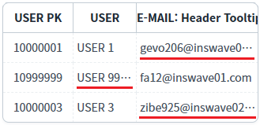
2
STEP 2: 말줄임표가 있는 셀에 마우스를 오버합니다.
2번째 행의 'USER' 컬럼에 마우스를 오버합니다.
3
STEP 3: 실행 결과를 확인합니다.
셀의 전체 데이터가 툴팁으로 표시됩니다. (말줄임표가 표시된 셀은 툴팁이 표시됩니다.)
Image 2.브라우저(Chrome) 실행 예시
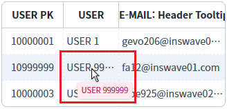
4
STEP 4: 말줄임표가 없는 셀에 마우스를 오버합니다.
1번째 행의 'USER' 컬럼에 마우스를 오버합니다.
5
STEP 5: 실행 결과를 확인합니다.
셀에 전체 데이터가 출력되어 툴팁이 표시되지 않습니다.
Image 3.브라우저(Chrome) 실행 예시
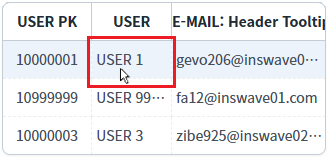
예제 영역 '모든 셀에 데이터 툴팁을 항상 표시하기'에 구성된 GridView에서 테스트합니다.GridView의 셀에 전체 데이터가 표현되지 않는 경우 말줄임표(...)가 표시됩니다. 모든 셀에 툴팁이 표시됩니다.
1
STEP 1: 초기 상태 확인하기
다음의 바디 셀이 말줄임표가 표시되었습니다. - 첫 번째 행, 'E-MAIL: Header Tooltip Test' 열에 해당하는 셀 - 두 번째 행, 'USER' 열에 해당하는 셀 - 세 번째 행, 'E-MAIL: Header Tooltip Test' 열에 해당하는 셀
Image 4.브라우저(Chrome) 실행 예시
2
STEP 2: 말줄임표가 없는 셀에 마우스를 오버합니다.
1번째 행의 'USER' 컬럼에 마우스를 오버합니다.
3
STEP 3: 실행 결과를 확인합니다.
셀의 전체 데이터가 툴팁으로 표시됩니다. (모든 셀에 툴팁이 표시됩니다.)
Image 5.브라우저(Chrome) 실행 예시
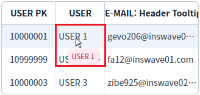
예제 영역 '지정된 컬럼의 전체 데이터가 출력되지 않는 셀만 툴팁 표시하기'에 구성된 GridView에서 테스트합니다.GridView의 셀에 전체 데이터가 표현되지 않는 경우 말줄임표(...)가 표시됩니다. 지정된 'USER' 컬럼의 셀에 전체 데이터가 표현되지 않는 경우에만 툴팁이 표시됩니다.
1
STEP 1: 초기 상태 확인하기
다음의 바디 셀이 말줄임표가 표시되었습니다. - 첫 번째 행, 'E-MAIL: Header Tooltip Test' 열에 해당하는 셀 - 두 번째 행, 'USER' 열에 해당하는 셀 - 세 번째 행, 'E-MAIL: Header Tooltip Test' 열에 해당하는 셀
Image 6.브라우저(Chrome) 실행 예시
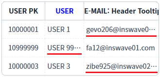
2
STEP 2: 'USER' 컬럼의 말줄임표가 있는 셀에 마우스를 오버합니다.
2번째 행의 'USER' 컬럼에 마우스를 오버합니다.
3
STEP 3: 실행 결과를 확인합니다.
툴팁이 표시됩니다.
Image 7.브라우저(Chrome) 실행 예시
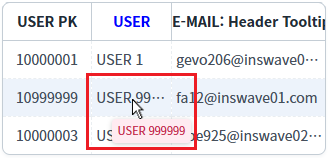
4
STEP 4: 컬럼 'E-MAIL: Header Tooltip Test'의 말줄임표가 있는 셀에 마우스를 오버합니다.
1번째 행의 컬럼 'E-MAIL: Header Tooltip Test'에 마우스를 오버합니다.
5
STEP 5: 실행 결과를 확인합니다.
툴팁이 표시되지 않습니다.
Image 8.브라우저(Chrome) 실행 예시
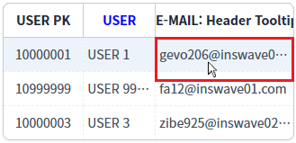
예제 영역 '지정된 컬럼의 셀에 데이터 툴팁을 항상 표시하기'에 구성된 GridView에서 테스트합니다.GridView의 셀에 전체 데이터가 표현되지 않는 경우 말줄임표(...)가 표시됩니다. 지정된 'USER' 컬럼의 셀에 툴팁이 항상 표시됩니다.
1
STEP 1: 초기 상태 확인하기
다음의 바디 셀이 말줄임표가 표시되었습니다. - 첫 번째 행, 'E-MAIL: Header Tooltip Test' 열에 해당하는 셀 - 두 번째 행, 'USER' 열에 해당하는 셀 - 세 번째 행, 'E-MAIL: Header Tooltip Test' 열에 해당하는 셀
Image 9.브라우저(Chrome) 실행 예시
2
STEP 2: 말줄임표가 없는 셀에 마우스를 오버합니다.
1번째 행의 'USER' 컬럼에 마우스를 오버합니다.
3
STEP 3: 실행 결과를 확인합니다.
툴팁이 표시됩니다.
Image 10.브라우저(Chrome) 실행 예시
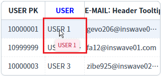
4
STEP 3: 'USER' 컬럼의 말줄임표가 있는 셀에 마우스를 오버합니다.
2번째 행의 'USER' 컬럼에 마우스를 오버합니다.
5
STEP 4: 실행 결과를 확인합니다.
툴팁이 표시됩니다.
Image 11.브라우저(Chrome) 실행 예시
6
STEP 5: 컬럼 'E-MAIL: Header Tooltip Test'의 말줄임표가 있는 셀에 마우스를 오버합니다.
1번째 행의 컬럼 'E-MAIL: Header Tooltip Test'에 마우스를 오버합니다.
7
STEP 6: 실행 결과를 확인합니다.
툴팁이 표시되지 않습니다.
Image 12.브라우저(Chrome) 실행 예시
GridView의 속성을 정의합니다.
[필수] tooltipDisplay="설정값"
[default: false, true] 전체 데이터가 바디 셀에 모두 표시되지 않는 경우, 마우스-오버 시 툴팁으로 데이터를 표시.
예시) tooltipDisplay="true" //툴팁 사용
[선택] tooltipHeader="설정값"
[default: false, true] 전체 데이터가 헤더 셀에 모두 표시되지 않는 경우, 마우스-오버 시 툴팁으로 데이터를 표시.
예시) tooltipHeader="true" //툴팁 사용
Image 13.웹스퀘어 스튜디오의 Component View - 속성 설정 예시
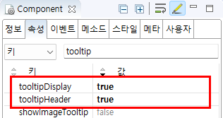
Example 1.Source
<!-- gridView 의 소스 본문 예시 --> <w2:gridView tooltipDisplay="true" tooltipHeader="true"> <!-- 중략 --> </w2:gridView>
GridView의 속성을 정의합니다.
[필수] tooltipDisplay="설정값"
[default: false, true] 전체 데이터가 바디 셀에 모두 표시되지 않는 경우, 마우스-오버 시 툴팁으로 데이터를 표시.
예시) tooltipDisplay="true" //툴팁 사용
[필수] tooltipShowAlways="설정값"
[default: false, true] 항상 툴팁 사용
예시) tooltipShowAlways="true" //툴팁 항상 표시 사용 - 바디의 셀
[선택] tooltipHeader="설정값"
[default: false, true] 전체 데이터가 헤더 셀에 모두 표시되지 않는 경우, 마우스-오버 시 툴팁으로 데이터를 표시.
예시) tooltipHeader="true" //툴팁 사용
[선택] tooltipHeaderShowAlways="설정값"
[default: false, true] 헤더 셀에 항상 툴팁 사용
예시) tooltipHeaderShowAlways="true" //툴팁 항상 표시 사용 - 헤더의 셀
Image 14.웹스퀘어 스튜디오의 Component View - 속성 설정 예시
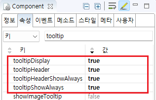
Example 2.Source
<!-- gridView 의 소스 본문 예시 --> <w2:gridView tooltipDisplay="true" tooltipShowAlways="true" tooltipHeader="true" tooltipHeaderShowAlways="true"> <!-- 중략 --> </w2:gridView>
GridView의 속성을 정의합니다.
[필수] tooltipDisplay="설정값"
[default: false, true] 전체 데이터가 바디 셀에 모두 표시되지 않는 경우, 마우스-오버 시 툴팁으로 데이터를 표시.
예시) tooltipDisplay="true" //툴팁 사용
[필수] tooltipDisplayColumn="컬럼ID"
특정 컬럼만 tooltip이 표현되도록 컬럼명을 지정.
예시1) tooltipDisplayColumn="EMP_NM" //컬럼 'EMP_NM'에 툴팁 사용
예시2) tooltipDisplayColumn="EMP_NM,EMAIL" //컬럼 'EMP_NM', 'EMAIL'에 툴팁 사용
Image 15.웹스퀘어 스튜디오의 Component View - 속성 설정 예시
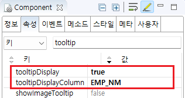
Example 3.Source
<!-- gridView 의 소스 본문 예시 --> <w2:gridView tooltipDisplay="true" tooltipDisplayColumn="EMP_NM"> <!-- 중략 --> </w2:gridView>
GridView의 속성을 정의합니다.
[필수] tooltipDisplay="설정값"
[default: false, true] 전체 데이터가 바디 셀에 모두 표시되지 않는 경우, 마우스-오버 시 툴팁으로 데이터를 표시.
예시) tooltipDisplay="true" //툴팁 사용
[필수] tooltipShowAlwaysColumns="컬럼ID"
툴팁을 항상 표시할 컬럼을 지정
예시1) tooltipShowAlwaysColumns="EMP_NM" //컬럼 'EMP_NM'에 툴팁 항상 표시 사용
예시2) tooltipShowAlwaysColumns="EMP_NM,EMAIL" //컬럼 'EMP_NM', 'EMAIL'에 툴팁 항상 표시 사용
Image 16.웹스퀘어 스튜디오의 Component View - 속성 설정 예시
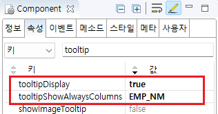
Example 4.Source
<!-- gridView 의 소스 본문 예시 --> <w2:gridView tooltipShowAlwaysColumns="EMP_NM" tooltipDisplay="true"> <!-- 중략 --> </w2:gridView>
tooltipDisplay
tooltipDisplayColumn
tooltipHeader
tooltipHeaderShowAlways
tooltipShowAlways
tooltipShowAlwaysColumns